The art keeps to the edges of every sheet —
the page itself is left for the letter.
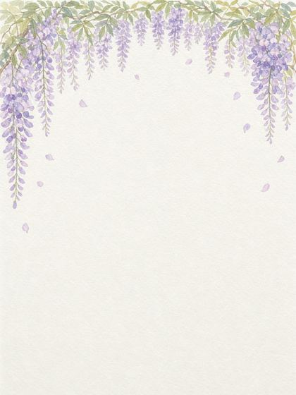
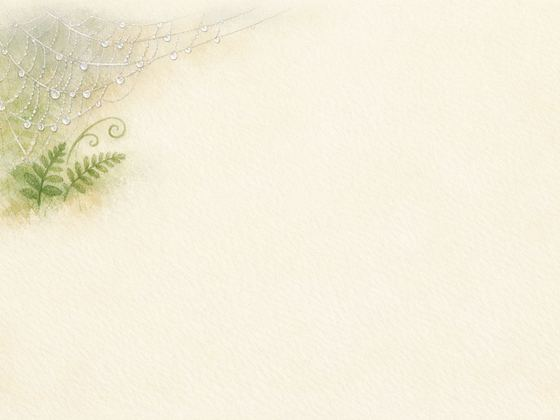
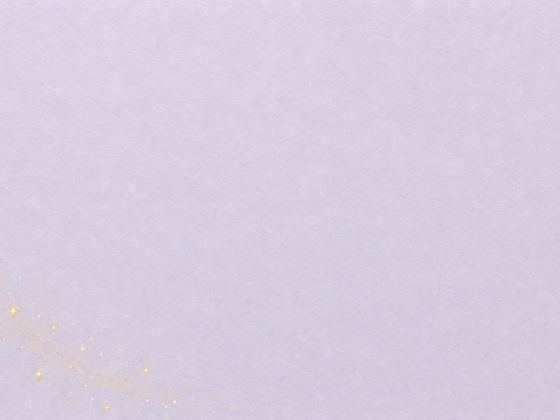
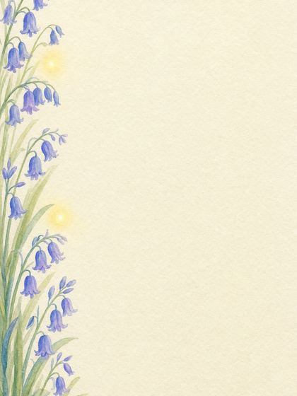
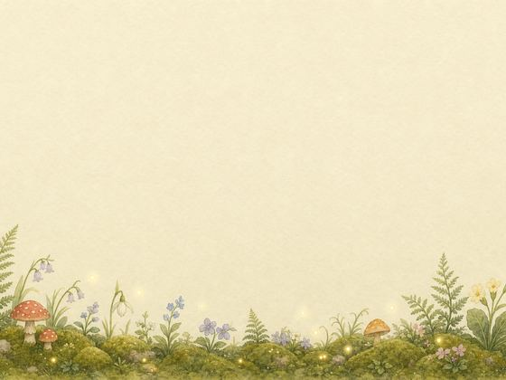
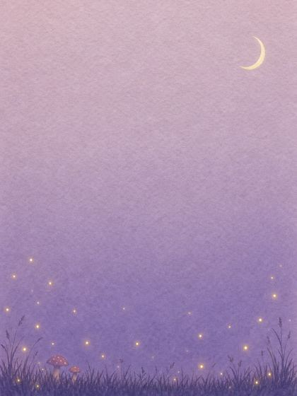
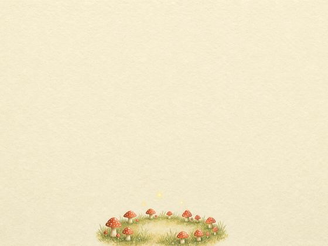
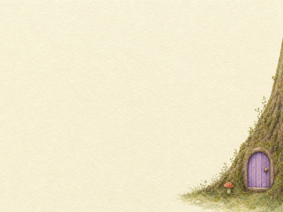
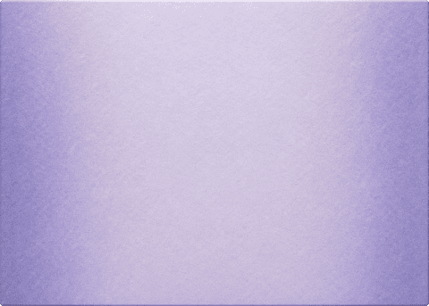
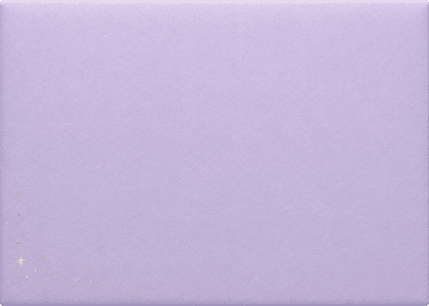
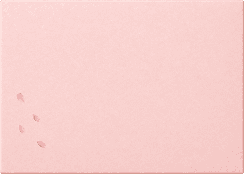
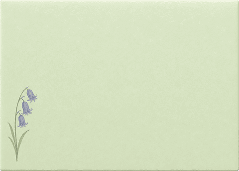
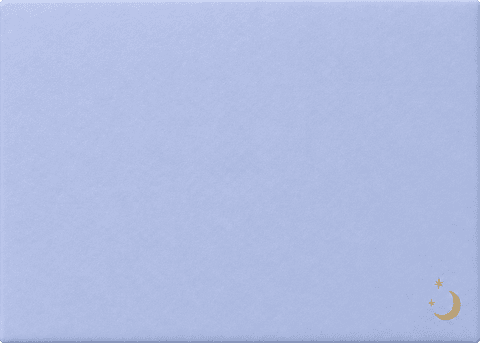
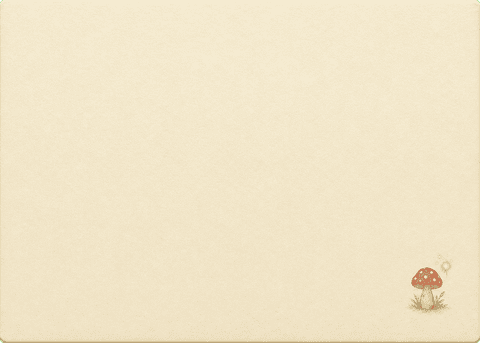
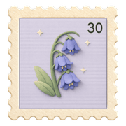
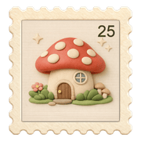
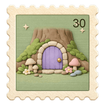
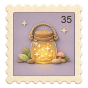
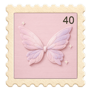
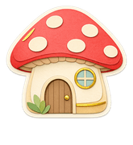
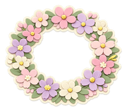
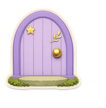
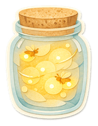
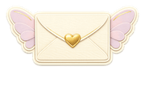
Fairy Glen — nine papers, each in portrait
and landscape. Six envelopes, six stamps, ten stickers, all made for
this desk alone. Every collection is built the same way: one style,
carried across every piece.
Across town, or across an ocean.
Family, friends and pen pals. Every contact is approved
before letters can be exchanged.
Why Postmello
Staying in touch doesn’t have to start with texting.
Kids are getting access to technology earlier, and they want to
stay close to their friends and family. Postmello is another place
to start: letters they write and draw themselves, sent to people
they know.
Looking like a desk was the easy part. The hard questions are the
ones a real desk never has to answer: what happens to a letter
mailed offline, or how a child writes back on top of someone
else’s letter without that quietly becoming a way to forward it.
The answers became rules — and the rules shaped Postmello more
than the wood grain.